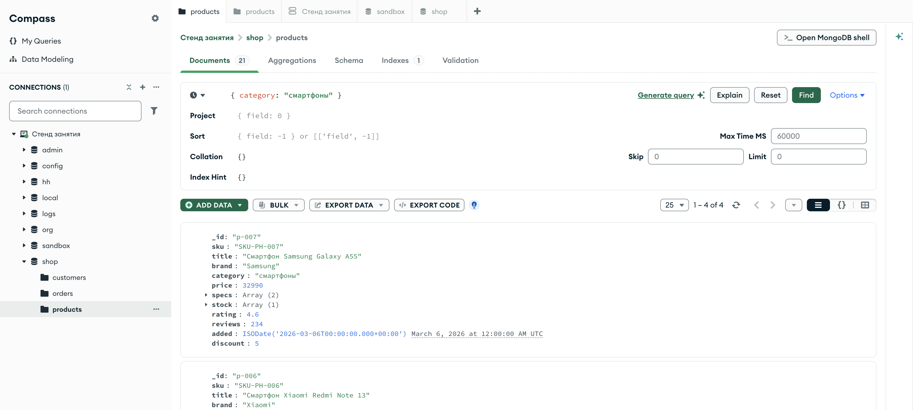

Справочник по MongoDB · модуль 1 · подключение и первые данные
Глава 1.4
Чтение:
find и курсор
Достать документы из коллекции — вторая базовая операция. Разберём разницу между find_one и find, поймём, что такое курсор и почему его нельзя пройти дважды, и увидим, что фильтр — это обычный документ.
«Пустой результат — это ответ, а не ошибка.»
- Категория
- Операции над данными
- Уровень
- Начальный
- Связанные темы
- Проекция, сортировка, язык фильтров
- Зачем это знать
- Читать данные порциями и понимать, почему результат пуст
§1find_one: первый подходящий
Метод find_one возвращает один документ — как обычный словарь Python — или None, если ничего не нашлось.
products = client["shop"]["products"] one = products.find_one({"category": "смартфоны"}) print(one["title"], one["price"])
auto products = client["shop"]["products"]; auto one = products.find_one(make_document(kvp("category", "смартфоны"))); std::cout << one->view()["title"].get_string().value << std::endl;
products := client.Database("shop").Collection("products") var one Product err := products.FindOne(ctx, bson.D{{Key: "category", Value: "смартфоны"}}).Decode(&one) fmt.Println(one.Title, one.Price)
products = client.use("shop").database[:products] one = products.find({ "category" => "смартфоны" }).first puts "#{one['title']} #{one['price']}"
{'_id': 'p-006',
'sku': 'SKU-PH-006',
'title': 'Смартфон Xiaomi Redmi Note 13',
'brand': 'Xiaomi',
'category': 'смартфоны',
'price': 18990,
'specs': ['6.67"', '128 ГБ'],
'stock': [{'warehouse': 'Санкт-Петербург', 'qty': 3},
{'warehouse': 'Москва-1', 'qty': 5}],
'rating': 3.7,
'reviews': 139,
'added': datetime.datetime(2026, 4, 11, 0, 0)}
Смартфон Samsung Galaxy A55
Смартфон Samsung Galaxy A55 32990
Смартфон Samsung Galaxy A55 32990
Смартфонов в коллекции четыре, а вернулся один — тот, который сервер нашёл первым. Какой именно — не определено: без сортировки «первый» означает «первый попавшийся», а не «самый дешёвый» или «самый ранний». Если вам нужен конкретный, добавляйте сортировку.
Когда совпадений нет, исключения не будет:
missing = products.find_one({"category": "велосипеды"}) print(missing) # None # поэтому обращаться к полям можно только после проверки if missing is not None: print(missing["title"])
auto missing = products.find_one(make_document(kvp("category", "велосипеды"))); // find_one возвращает optional: пустой, если ничего не нашлось if (missing) { std::cout << missing->view()["title"].get_string().value; }
var missing Product err := products.FindOne(ctx, bson.D{{Key: "category", Value: "велосипеды"}}).Decode(&missing) // «не нашлось» — это отдельная ошибка, а не пустая структура if errors.Is(err, mongo.ErrNoDocuments) { fmt.Println("ничего не нашлось") }
missing = products.find({ "category" => "велосипеды" }).first puts missing.inspect # nil # поэтому обращаться к полям можно только после проверки puts missing["title"] unless missing.nil?
§2Фильтр — это документ
Аргумент, который мы передаём, — фильтр. Это обычный документ: поля в нём означают условия, а не значения для записи.
category в точности равно этой строке.5 из 21Перечисление полей через запятую — это всегда «и», отдельного оператора для такого случая не нужно. «Или», сравнения и условия по массивам — тоже документы, только со специальными полями-операторами; им посвящён весь модуль 2.
Раз фильтр — документ, его можно собрать в коде: положить в словарь, дополнить по условию, передать дальше как параметр функции. Строку запроса склеивать не нужно, поэтому исчезает целый класс ошибок, знакомых по SQL, — от кавычки в имени до подстановки чужого условия.
def search(category=None, brand=None): query = {} if category: query["category"] = category if brand: query["brand"] = brand return list(products.find(query))
auto search(std::string category, std::string brand) { bsoncxx::builder::basic::document query{}; if (!category.empty()) query.append(kvp("category", category)); if (!brand.empty()) query.append(kvp("brand", brand)); return products.find(query.extract()); }
func search(ctx context.Context, category, brand string) ([]Product, error) { query := bson.D{} if category != "" { query = append(query, bson.E{Key: "category", Value: category}) } if brand != "" { query = append(query, bson.E{Key: "brand", Value: brand}) } cursor, err := products.Find(ctx, query) if err != nil { return nil, err } var list []Product return list, cursor.All(ctx, &list) }
def search(category: nil, brand: nil) query = {} query["category"] = category if category query["brand"] = brand if brand PRODUCTS.find(query).to_a end
§3find: курсор, а не список
Метод find возвращает все подходящие документы — но не сразу и не списком. Он возвращает курсор: объект, который будет подтягивать документы с сервера по мере того, как вы их перебираете.
cursor = products.find({"category": "смартфоны"}) print(type(cursor).__name__) for doc in cursor: print(doc["_id"], doc["title"], doc["price"])
auto cursor = products.find(make_document(kvp("category", "смартфоны"))); for (const auto& doc : cursor) { std::cout << doc["_id"].get_string().value << " " << doc["price"].get_int32().value << std::endl; }
cursor, _ := products.Find(ctx, bson.D{{Key: "category", Value: "смартфоны"}}) fmt.Printf("тип: %T\n", cursor) for cursor.Next(ctx) { var p Product cursor.Decode(&p) fmt.Println(p.ID, p.Title, p.Price) }
view = products.find({ "category" => "смартфоны" }) puts "класс: #{view.class}" view.each { |doc| puts "#{doc['_id']} #{doc['title']} #{doc['price']}" }
Cursor p-006 Смартфон Xiaomi Redmi Note 13 18990 p-007 Смартфон Samsung Galaxy A55 32990 p-009 Смартфон realme 12 Pro 27490 p-008 Смартфон Apple iPhone 15 79990
p-007 32990 p-008 79990 p-006 18990 p-009 27490
тип: *mongo.Cursor p-007 Смартфон Samsung Galaxy A55 32990 p-008 Смартфон Apple iPhone 15 79990 p-006 Смартфон Xiaomi Redmi Note 13 18990 p-009 Смартфон realme 12 Pro 27490
класс: Mongo::Collection::View p-007 Смартфон Samsung Galaxy A55 32990 p-008 Смартфон Apple iPhone 15 79990 p-006 Смартфон Xiaomi Redmi Note 13 18990 p-009 Смартфон realme 12 Pro 27490
Список вместо курсора означал бы, что все подходящие документы — а их может быть миллион — сразу окажутся в памяти. Курсор забирает данные пачками (по умолчанию первая пачка — 101 документ), а следующую запрашивает, когда предыдущая закончилась. Программа при этом работает с обычным перебором и о пачках не знает.
Если документов заведомо немного и они нужны все сразу, курсор превращают в список явно:
items = list(products.find({"category": "смартфоны"})) print(len(items)) # 4
§4Курсор проходится один раз
Курсор одноразовый: он помнит, где остановился, и после полного прохода становится пустым. На этом чаще всего спотыкаются, приняв его за список.
Курсор одноразовый: mongocxx::cursor можно обойти ровно один раз, повторный for по тому же объекту не даст ни одного документа.
Курсор одноразовый: после того как Next вернул false, курсор исчерпан. Метод All тоже дочитывает его до конца — второй раз данных не будет.
В Ruby find возвращает не курсор, а представление Mongo::Collection::View — описание запроса. Каждый обход выполняет запрос заново, поэтому повторная итерация данные вернёт. Курсор внутри одноразовый и здесь: просто драйвер создаёт новый.
cursor = products.find({"category": "смартфоны"}) for doc in cursor: print(doc["_id"]) # четыре строки print("второй проход:", list(cursor))
auto cursor = products.find(make_document(kvp("category", "смартфоны"))); for (const auto& doc : cursor) { /* четыре документа */ } int second = 0; for (const auto& doc : cursor) ++second; std::cout << "второй проход: " << second << std::endl;
cursor, _ := products.Find(ctx, bson.D{{Key: "category", Value: "смартфоны"}}) for cursor.Next(ctx) { // четыре документа } fmt.Println("второй проход:", cursor.Next(ctx))
view = products.find({ "category" => "смартфоны" }) view.each { |doc| puts doc["_id"] } # четыре строки # запрос выполняется заново — документы те же puts "второй проход: #{view.to_a.size} документов"
второй проход: []
второй проход: 0 документов
второй проход: false
второй проход: 4 документов
Правило: если результат нужен дважды, его сохраняют в список. Типичная ошибка выглядит безобидно — сначала посчитали длину, потом вывели:
cursor = products.find({"category": "ноутбуки"}) print("найдено:", len(list(cursor))) # 5 for doc in cursor: # ни одной строки print(doc["title"])
auto cursor = products.find(make_document(kvp("category", "ноутбуки"))); auto found = std::distance(cursor.begin(), cursor.end()); // 5 for (const auto& doc : cursor) { // ни одного std::cout << doc["title"].get_string().value; }
cursor, _ := products.Find(ctx, bson.D{{Key: "category", Value: "ноутбуки"}}) var list []Product cursor.All(ctx, &list) // 5, курсор дочитан for cursor.Next(ctx) { // ни одной итерации // сюда уже не попадём }
# в Ruby эта ловушка не срабатывает: view перезапрашивает данные view = products.find({ "category" => "ноутбуки" }) puts "найдено: #{view.to_a.size}" # 5, первый запрос view.each { |doc| puts doc["title"] } # 5, второй запрос
items = list(products.find({"category": "ноутбуки"})) print("найдено:", len(items)) # 5 for doc in items: # пять строк print(doc["title"])
std::vector<bsoncxx::document::value> items; for (const auto& doc : products.find(make_document(kvp("category", "ноутбуки")))) items.emplace_back(doc); std::cout << "найдено: " << items.size() << std::endl; // 5 for (const auto& doc : items) { /* пять раз */ }
cursor, _ := products.Find(ctx, bson.D{{Key: "category", Value: "ноутбуки"}}) var items []Product cursor.All(ctx, &items) fmt.Println("найдено:", len(items)) // 5 for _, doc := range items { // пять строк fmt.Println(doc.Title) }
items = products.find({ "category" => "ноутбуки" }).to_a puts "найдено: #{items.size}" # 5, один запрос к серверу items.each { |doc| puts doc["title"] } # пять строк, без запроса
Считать количество через len(list(...)) всё же не стоит: ради числа вы тащите на клиент все документы. Для этого есть count_documents(filter) — сервер посчитает сам и вернёт одно число. О нём подробно в главе 1.6.
§5Порядок без сортировки не определён
В выводе из §3 документы идут не по ключу и не по цене — а у разных драйверов ещё и в разном порядке. Без явной сортировки сервер не обещает никакого порядка: он отдаёт документы так, как ему удобнее их читать.
Порядок может измениться после обновления документа, после перестроения индекса, на другом сервере — и код, который на него опирался, однажды сломается без единой правки. Нужен порядок — просите его явно:
for doc in products.find({"category": "смартфоны"}).sort("price", 1): print(doc["price"], doc["title"])
mongocxx::options::find options; options.sort(make_document(kvp("price", 1))); for (const auto& doc : products.find( make_document(kvp("category", "смартфоны")), options)) { std::cout << doc["price"].get_int32().value << std::endl; }
cursor, _ := products.Find(ctx, bson.D{{Key: "category", Value: "смартфоны"}}, options.Find().SetSort(bson.D{{Key: "price", Value: 1}})) var list []Product cursor.All(ctx, &list) for _, doc := range list { fmt.Println(doc.Price, doc.Title) }
products.find({ "category" => "смартфоны" }) .sort({ "price" => 1 }) .each { |doc| puts "#{doc['price']} #{doc['title']}" }
§6Точечная нотация: внутрь документа
Условие можно поставить и на вложенное поле — путь пишется через точку и берётся в кавычки целиком.
orders = client["shop"]["orders"] # доставка в Екатеринбург — 28 заказов orders.count_documents({"delivery.city": "Екатеринбург"}) # оплаченные заказы orders.count_documents({"payment.paid": True})
auto orders = client["shop"]["orders"]; // доставка в Екатеринбург — 28 заказов orders.count_documents(make_document(kvp("delivery.city", "Екатеринбург"))); // оплаченные заказы orders.count_documents(make_document(kvp("payment.paid", true)));
orders := client.Database("shop").Collection("orders") // доставка в Екатеринбург — 28 заказов orders.CountDocuments(ctx, bson.D{{Key: "delivery.city", Value: "Екатеринбург"}}) // оплаченные заказы orders.CountDocuments(ctx, bson.D{{Key: "payment.paid", Value: true}})
orders = client.use("shop").database[:orders] # доставка в Екатеринбург — 28 заказов orders.count_documents({ "delivery.city" => "Екатеринбург" }) # оплаченные заказы orders.count_documents({ "payment.paid" => true })
db.orders.countDocuments({ "delivery.city": "Екатеринбург" }) db.orders.countDocuments({ "payment.paid": true })
Фильтр {"delivery": {"city": "Екатеринбург"}} — это не то же самое, что {"delivery.city": "Екатеринбург"}. Первый ищет документы, у которых delivery в точности равен {"city": "Екатеринбург"} — то есть содержит ровно одно поле и ничего больше. У наших заказов в delivery три поля, поэтому такой фильтр не найдёт ничего. Точечная нотация проверяет одно поле внутри и на остальные не смотрит.
Точка работает и с массивами — но там правила свои: условие проверяется на каждом элементе, и достаточно одного совпадения. Массивам посвящена глава 2.6.
§7Тот же запрос в Compass
Строка Filter в Compass принимает ровно тот же документ, что и find в коде. Это удобно: запрос отлаживают глазами в Compass, а потом переносят в программу без переписывания.

shop.products, фильтр { category: "смартфоны" } — счётчик показывает 1–4 из 4Счётчик над списком документов показывает, сколько документов вернул фильтр. Это число и записывают в отчёт.
§8Пустой результат: что проверить
Пустой ответ разбирается по шагам. Почти всегда дело в одном из пяти пунктов.
| Проверка | Как проверить | Признак |
|---|---|---|
| Та ли база и коллекция | col.count_documents({}) | Ноль на пустом фильтре — вы не в той коллекции или имя с опечаткой |
| Тот ли тип значения | {"price": 18990} против {"price": "18990"} | Число не равно строке. Тип виден в Compass рядом с полем |
| Тот ли регистр и написание | "Смартфоны" против "смартфоны" | Сравнение строк точное, регистр важен |
| Есть ли лишние пробелы | {"city": "Екатеринбург "} | Пробел в конце — тоже символ. Часто приезжает из выгрузок |
| Не вложенный ли документ целиком | {"delivery": {...}} вместо {"delivery.city": ...} | Полное сравнение вложенного документа требует точного совпадения всех полей |
§9Частые ошибки
| Что написано | Что происходит | Как правильно |
|---|---|---|
find(...)[0] | TypeError: курсор не индексируется как список | find_one(...) или list(find(...))[0] |
len(cursor) | TypeError: object of type 'Cursor' has no len() | count_documents(filter) |
| Перебор курсора дважды | Второй раз ноль строк, ошибки нет | Сохранить в список: items = list(...) |
find_one(...)["title"] без проверки | TypeError: 'NoneType' object is not subscriptable | Проверить на None до обращения к полям |
Опора на порядок без sort | Работает, пока однажды не переставится | Всегда указывать сортировку, если порядок важен |
§10Проверьте себя
Чем find отличается от find_one?
find_one возвращает один документ (словарь) или None. find возвращает курсор по всем подходящим документам; чтобы получить сами документы, курсор перебирают или превращают в список.
Почему второй перебор курсора не вывел ничего, хотя ошибки не было?
Курсор одноразовый: он помнит позицию и после полного прохода исчерпан. Данные для повторного использования сохраняют в список.
Смартфоны вернулись в порядке p-006, p-007, p-009, p-008. Это ошибка?
Нет. Без sort порядок не определён: сервер отдаёт документы так, как ему удобнее. Нужен конкретный порядок — задайте его явно.
Чем {"delivery.city": "Екатеринбург"} отличается от {"delivery": {"city": "Екатеринбург"}}?
Первый находит 28 заказов: он проверяет одно поле внутри вложенного документа и не смотрит на остальные. Второй требует, чтобы delivery был в точности таким документом — с единственным полем city, — и находит ноль: у наших заказов в delivery три поля.
Как узнать число подходящих документов, не вытягивая их на клиент?
col.count_documents(filter) — считает сервер, возвращается одно число. len(list(col.find(filter))) даст тот же ответ, но сначала перекачает все документы.
§11Шпаргалка
col.find_one({"_id": "p-003"})
# вернёт None, если нет
for d in col.find({...}):
print(d["title"])
items = list(col.find({...}))
{"delivery.city": "Москва"}
{"payment.paid": True}
col.count_documents({})
col.count_documents(
{"category": "ноутбуки"})
Итог главы
find_one отдаёт один документ или None, find — курсор, который подтягивает документы порциями и проходится ровно один раз. Фильтр — это документ: перечисленные поля соединяются по «и», а вложенные поля адресуются через точку. Порядок документов без явной сортировки не гарантирован. Дальше научимся забирать не весь документ целиком, а только нужные поля.